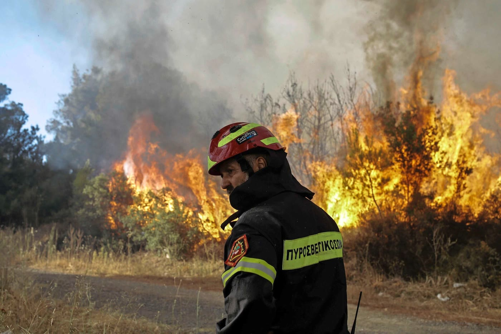
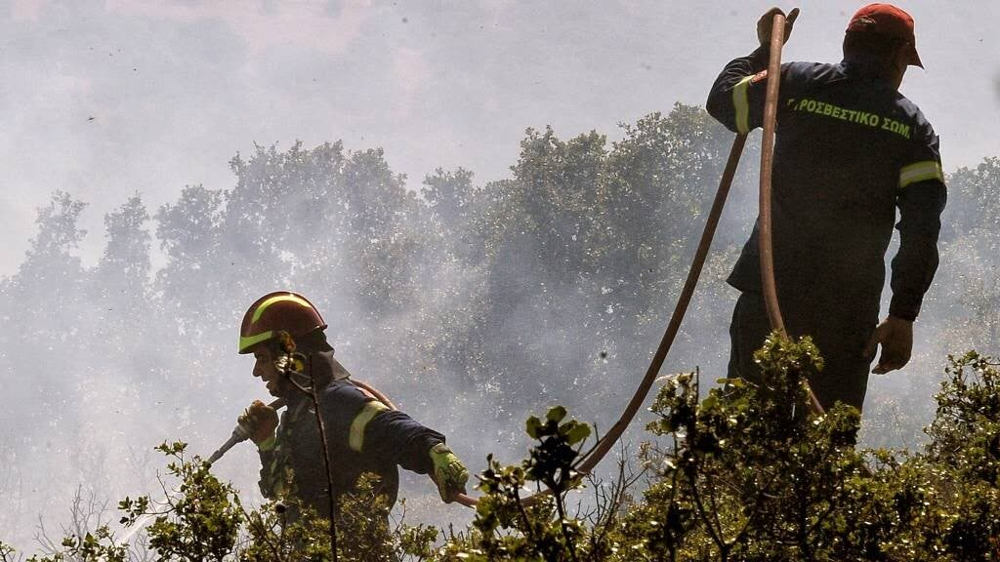
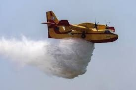

Hoofdpost brandweerkazerne Kos-stad
De brandweerkazerne in Kos-stad is de belangrijkste en enige permanente kazerne op het eiland. Hier zijn het merendeel van het personeel, de voertuigen en de middelen gestationeerd.

Tik op een nummer om te bellen.
De brandweerkazerne in Kos-stad is de belangrijkste en enige permanente kazerne op het eiland. Hier zijn het merendeel van het personeel, de voertuigen en de middelen gestationeerd.

Tijdens het brandseizoen, vooral in de hete en droge zomermaanden, worden er mobiele blusploegen ingezet in dorpen en gebieden zoals Kefalos en Kardamena. Dit zijn geen permanente kazernes, maar tijdelijke operationele posten die worden gebruikt om snel te kunnen reageren op bosbranden en andere noodsituaties.
Bij ernstige branden is er ook samenwerking met luchtsteun, zoals helikopters en vliegtuigen, om de bestrijding van de branden te ondersteunen.
